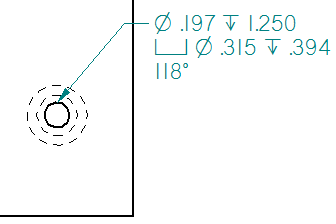

Customize a feature callout
When placing a callout on a hole, slot, or threaded feature, you can customize the information extracted when you use the Feature Callout button. One way to do this is to add property text codes to the appropriate boxes on the Feature Callout tab in the Callout Properties dialog box. You also can add property text codes to a callout text box on the General tab.
-
On the Feature Callout tab, in the box that defines the hole or slot information you want to modify [such as Countersink or Counterdrill or Counterbore (threaded)], click to position the cursor where you want the additional information to appear within the callout.
-
Click the Select Symbols and Values button
 .
. -
In the Select Symbols and Values dialog box, expand the Values→Feature Reference category, and scroll down until you see the value you want to extract.
Example:You can extract any of the following from the model:
-
The V bottom angle (%V1) for a hole.
-
The taper ratio (%T1) and taper angle (%TA) for a tapered hole.
-
The tap drill diameter (%DD), internal minor diameter (%MD), or nominal diameter (%ND) for a threaded hole or cylinder.
-
-
Double-click the row containing the hole property you want to extract.
-
Click OK to close the Select Symbols and Values dialog box, and then click OK to close the Callout Properties dialog box.
-
Click the feature geometry to place the callout.
Example:A V Bottom Angle (%V1) property text code was added to the last line in this feature callout, which references a counterbole hole with a V bottom.

For more information about the custom hole properties that you can extract into callouts, see the Feature References table in the help topic, Property text codes.
How do I
Place a calloutPlace a hole callout
Place a feature callout
Define smart feature properties in the Dimension style
Learn more
Formatting callout text and borderManipulating callouts
Look up more details
Callout commandCallout command bar
Callout Properties dialog box
General tab (Callout Properties dialog box)
Text and Leader tab
Feature Callout tab
Border tab (Callout Properties dialog box)
Quick links
Place a feature callout dimensionBasic reference and property text rules
Format codes to modify reference and property text output